Installation
- Windows
- Linux
- Mac
Launch the installer: Sparsely-0.1.0-win64.exe
Install xcb: apt update & apt install libxcb-cursor0
Launch the installer: Sparsely-0.1.0-Linux.run
Launch the installer: Sparsely-0.1.0-Darwin.dmg
Follow the on-screen instructions.
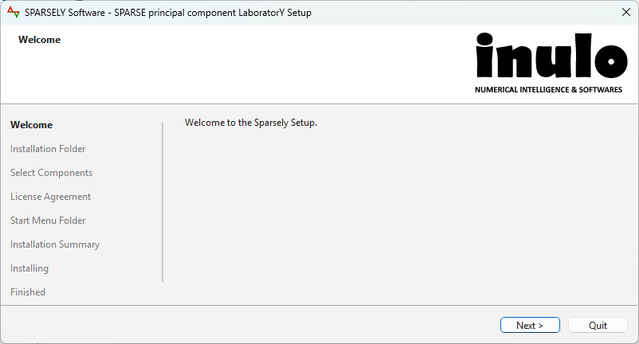
Sparsely should be available on shortcut menus.
Launch the application
You can now run the application from the shortcut menus or the installation folder. You should see the welcome window below.
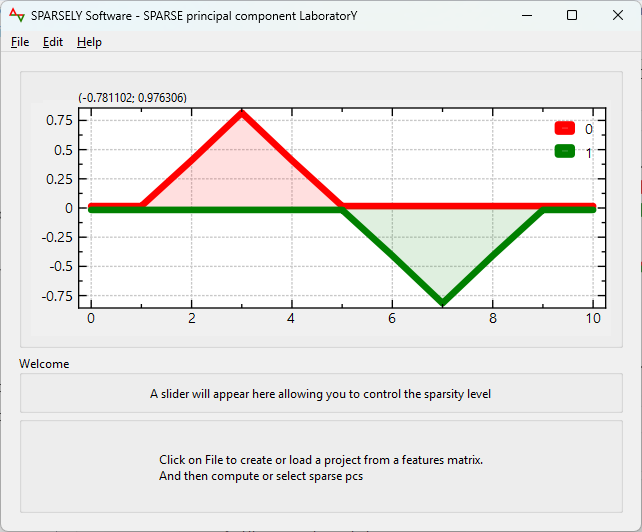
Create a new project
Go to the File menu > New and select your input data.
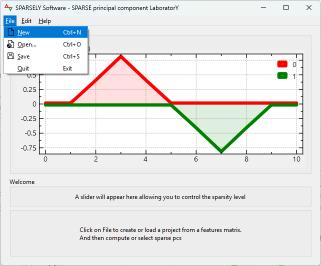
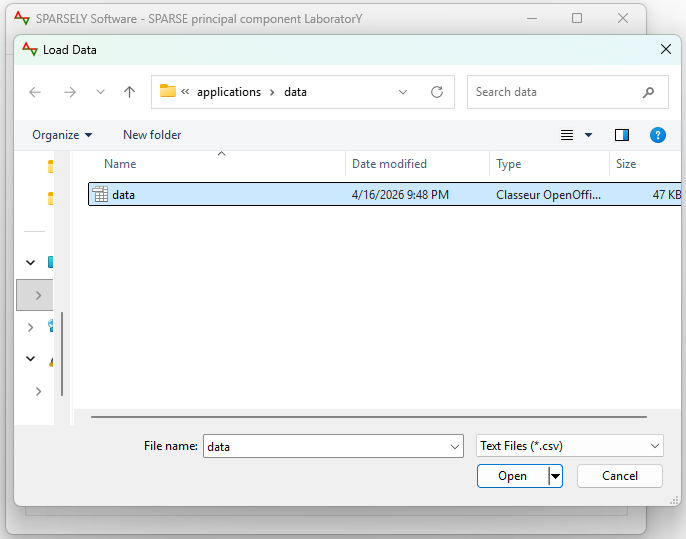
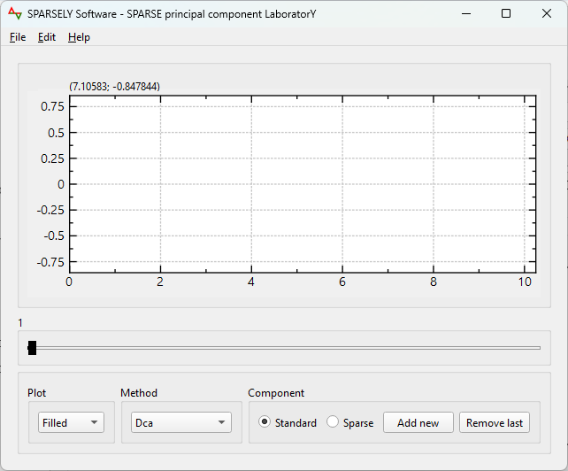
The data are now loaded and ready for processings.
Input data format
We are currently using a CSV format. We will extend it to other formats in future versions.
Each column represents one feature and each row represents one sample. We load data with or without a header.
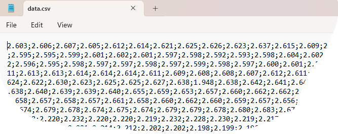
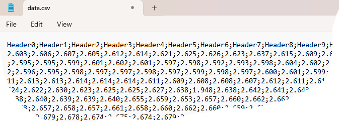
Save current project
To save your current work and retrieve it later, go to the File menu > Save. The project will be stored as a binary format ".sparsely".
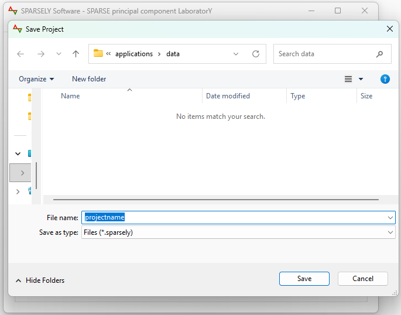
Open existing project
Retrieve your saved work and continue your processings.
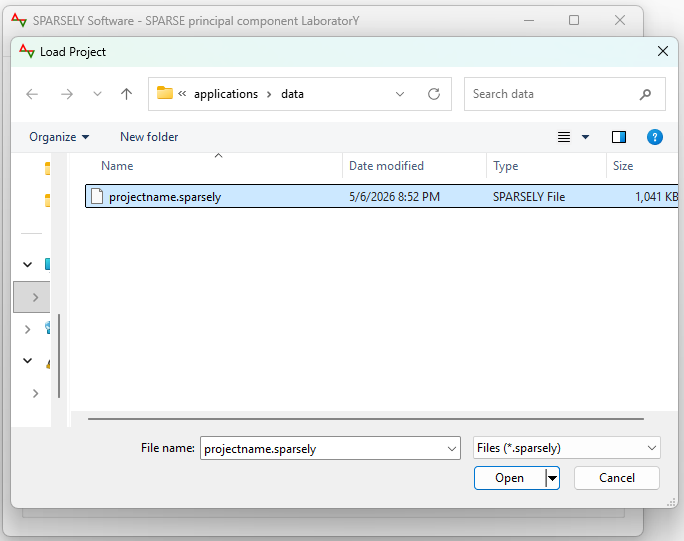
Compute sparse components
"Sparse" button must be checked.
"Add new" button validates current round sparse component candidate and launch the computation of the next round sparse component candidates. Computations progress are reported by a progress bar dialog.
"Sparse" button must be checked.
"Remove last" button removes current round sparse component candidates and makes the previous ones candidates.
You can process standard components by checking the "Standard" button. Standard components are mainly used as controls about cumulative explained variances.
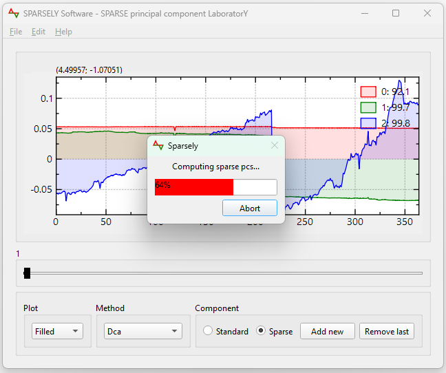
Use the slider to tune and choose one sparse component candidate for the ongoing round.
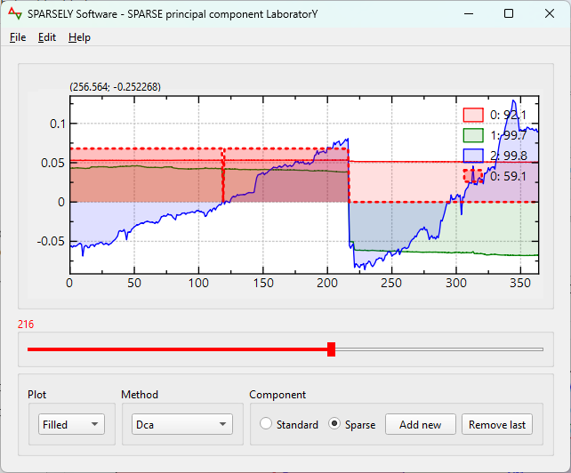
Launch next round sparse component ...
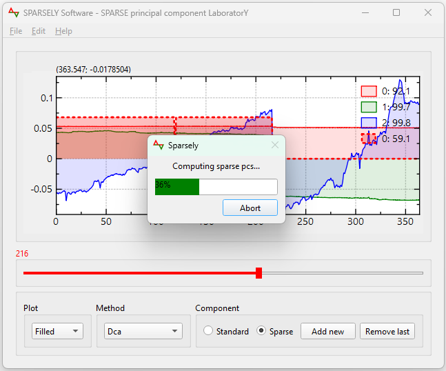
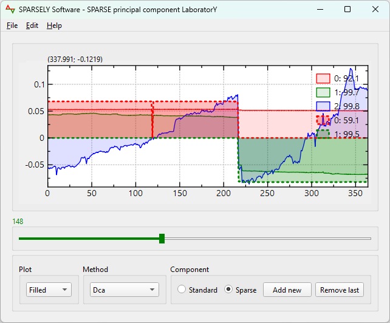
You can choose between several methods via the "Method" drop down menu.
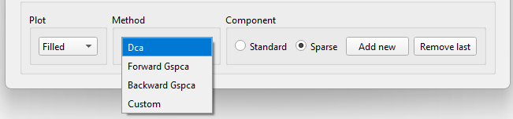
Plot type
You can change the plot type via the "Plot" drop down menu.
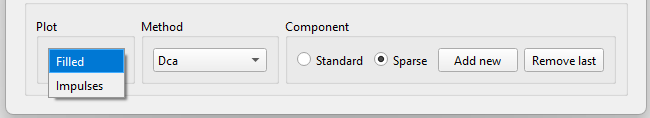
Reading and interpreting the plots
By default, solid and dotted plots represent standard and sparse principal components curves, respectively. The standard principal components are used only for controls.
The round of each principal component and the corresponding cumulative explained variances are indicated on the plot legend text formatted as [round number]:[round cumulative explained variances]. Each round has its own color.
The slider controls and tunes the sparsity of a candidate sparse principal component at the current round. It has the same color as the round.
The capture below shows 3 first standard principal components which cumulate around 99.8% from the total variance and 2 first sparse principal components that cumulate around 99.5%. The slider, in green color, indicates the maximum allowed cardinality k = 148 of the candidate sparse component, in green, at its top left corner.
Define preferences
Go to the Edit menu > Preferences
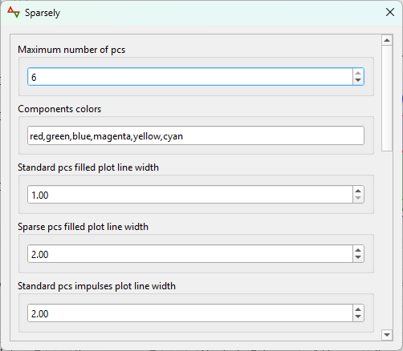
Using plot tools
The plot window embeds several tools: save plot as image, save plot data, graph visibility, ...
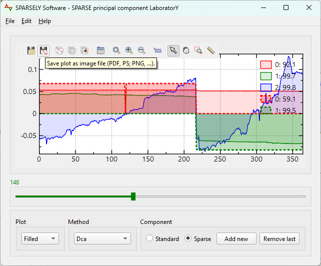
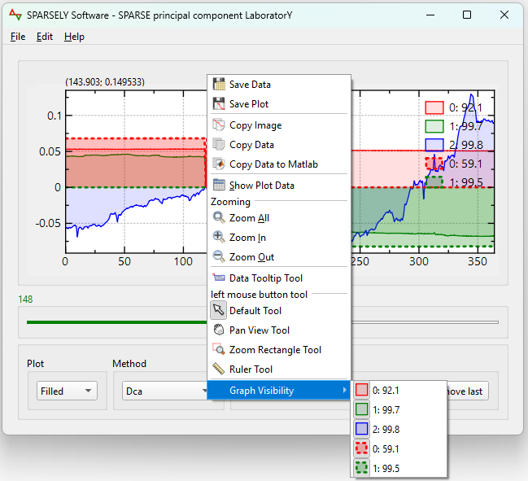
Compute methods
Sparsely is a standalone software using the sparse principal component C++ header only library Sparsepc. The solver implements several methods and can be used independently from Sparsely. It will be feeded with new implemented sparse pc methods.
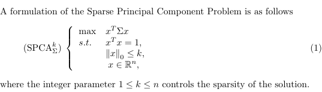
We have implemented Dca method from Thiao et al., Gspca backward and forward methods from Moghaddam et al. and deflation methods from Mackey et al.
We plan to implement all sparse principal component methods and deflation techniques and incorporate them into the solver.
Extending methods via addons
User can extend computation methods dynamically by providing dynamic libraries (.dll, .so, .dylib) of his own sparse principal component methods. These files should be placed on a folder defined via Sparsely preferences settings.
The dynamic library should expose the following function:
/**
* @brief Computes a sparse eigen vector.
* @param[in] sigmaData, covariance matrix in col major layout.
* @param[in] n, covariance matrix size.
* @param[in] k, sparsity level, number of nonzeros.
* @param[out] sparseEigenVectorData, preallocated for n values.
* @note This function does not check for overflow or nullity.
*/
void computeSparseEigenVector(const double* sigmaData, int n, int k, double* sparseEigenVectorData);
Then choose the line corresponding to the addon name in Method drop down menu.
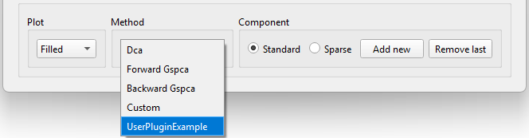
Extending methods via C++
Computation methods can be extended statically using C++ by inserting the user's sparse principal component code in the class CustomSolverModel defined in the file include\sparsepc\custom\solver.hpp and recompile Sparsely.
Then choose Custom in the Method drop down menu.
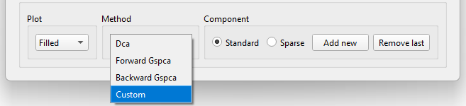